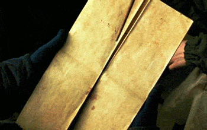
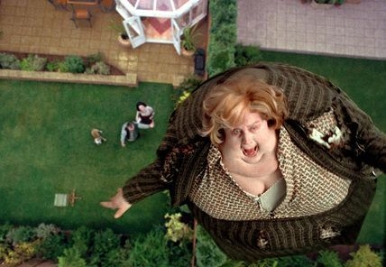
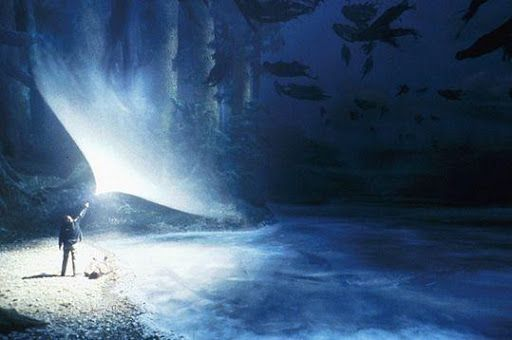

Harry Potter y el Prisionero de Azkaban


Igual que en las dos primeras partes de la saga Harry Potter y la Piedra Filosofal y Harry Potter y la Cámara Secreta, Harry aguarda con impaciencia el inicio del tercer curso en el colegio Hogwarts. Trás haber cumplido los trece años, solo y lejos de sus amigos de Hogwarts, Harry se pelea con su bigotuda tía Marge a la que convierte en globo, y debe huír en un autobus mágico. Mientras tanto, de la prisión de Azkaban se ha escapado un terrible villano.
Sirius Black, un asesino en serie con poderes mágicos que fue complice de Lord Voldemort y que parece dispuesto a eliminar a Harry del mapa. Y por si esto fuera poco, Harry deberá enfrentarse también a unos terribles mostruos, los dementores, seres abominables capaces de robarles la felicidad a los magos y de borrar todo recuerdo hermoso de aquellos que osan mirarlos. Lo que ninguno de estos malvados personajes saben es que Harry, con la ayuda de sus fieles amigos Ron y Hermione, es capaz de todo y mucho más.
